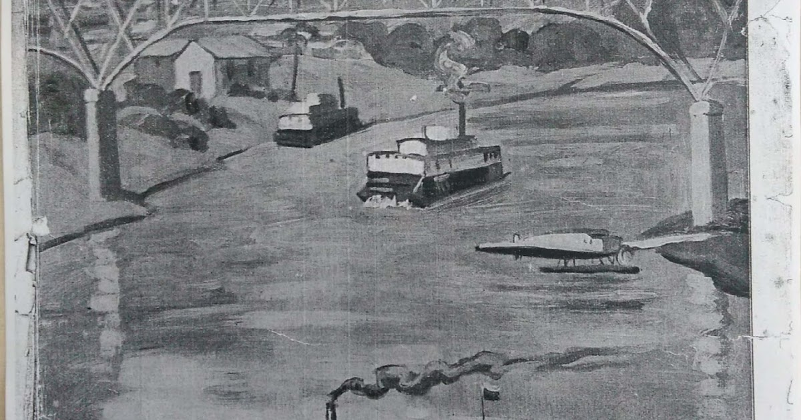

HISTORIA DE GIRARDOT
Según cuentan las lenguas más viejas y sabias que en los tiempos de la conquista y de la colonia, en el lugar donde está ubicado Girardot había un paso del rio esto quiere decir que por ahí pasaban la gente que viajaban de norte a sur y de sur a norte, las personas que venían del occidente colombiano y las que también venían en barco, incluso del exterior.
La gente para transportarse en ese tiempo lo hacían en una canoa que le decían “la canoa de montero” ya que este señor era dueño de esta canoa y su nombre era pastor montero el cual vivía en la vecindad de Tocaima; anteriormente Flandes ocupaba un perímetro urbano de Girardot y le pertenecía a Tocaima por lo cual el rio magdalena fue llamado mucho tiempo “el paso de Flandes”.
El propietario de la canoa el cual era el señor pastor montero construyo inmediaciones del rio, una enramada en la cual le proporcionaba hospedaje y comida a las personas que pasaban por allí; y sin darse de cuenta el tiempo corrió y llegaron otras personas a construir algunas casas y así empezó a formarse un caserío que los que pasaban por allí le llamaban a este caserío “la chivatera”. Le llamaban la chivatera ya que en sus alrededores era común y se veía demasiado la cría de las cabras o de las chivas.
En el año de 1800 con el funcionamiento de la canoa de montero se fueron reuniendo y llegando personas poco a poco hasta que formaron un poblado, estas personas se dedicaban al cultivo del tabaco y el maíz. Pronto hubo numerosas casas en tierra y techo pajizo; al cabo de varios años el llamado caserío creció bastante, a las personas de la chivatera se les ocurrió hacer un pueblo y así es como el 10 de febrero de 1844 los señores Ramon Bueno y José Triana regalaron ejidos de una parroquia. Después de tales donaciones que hicieron los señores Ramon Bueno y José Triana se mantuvieron al margen como unas personas más influyentes de todo el caserío, años más tarde Juancho Triana el hijo de José Triana se convierte en uno de los primeros alcaldes de la población.
En el año de 1852 del 9 de octubre a petición de los habitantes la cámara provincial del Tequendama se dicto la ordenanza No*20 por medio del cual al poblado se le constituyo como distrito parroquial con el nombre de Girardot. Este nombre se le dio al municipio en homenaje al coronel Atanasio Girardot. El 20 de septiembre 1882 se comenzó la construcción del antiguo puente sobre el rio magdalena conocido con el nombre “puente real” fue una de las obras mas importante de la época ya que iba a solucionar la comunicación entre Cundinamarca y Tolima. Esta obra fue iniciada por los señores Camilo Antonio y Gonzalo Carrizosa este puente se inauguró el 15 de marzo de 1884, tenia 75 metros de luz 3metros de ancho y una elevación de 12metros sobre el nivel ordinario de las aguas, su capacidad de resistencia era de 600kilos por metro cuadrado, duro 78 años en funcionamiento y 302 días, el 12 de enero de 1963 se cayó.
Años después este pueblo creció y se convirtió en la intersección mas importante del comercio que conectaba con todo el país. Así es como hoy en día Girardot se considera municipio turístico para todos los visitantes y extranjeros que llegan a la ciudad.
EVOLUCION, EPOCA DE ORO EN GIRARDOT
El auge de Girardot en cuanto a la navegación fluvial se ubica entre 1880 y 1930, convirtiendo a Girardot en el puerto comercial más importante ncontramos que en el siglo XIX empezó el auge y la evolución de todo Girardot, ya que, prácticamente inició en el año 1881 con la construcción del ferrocarril de Girardot esto hizo que la navegación a vapor fuera una de las cosas mas importantes que tuvo para ese tiempo Girardot Para 1905 y 1960 la ciudad se enfoco en los aspectos económicos y las transformaciones que pudo tener en el plano urbanismo y social gracias a esto se obtuvo un desarrollo general de Girardot, y añadiéndole los cambios arquitectónicos y urbanísticos de la misma, esto hizo que Girardot fuera una ciudad tomada por la migración extranjera a las cuales se le puede hacer un honor como factor constitutivo de la ciudad ya que gracias a ellos se pudo acelerar el aspecto económico y comercial.

En 1930 los índices de las poblaciones crecieron en toda la mayoría de América latina gracias a la segunda guerra mundial y como consecuencia de la disminución de la tasa de mortalidad y la mejora en la economía en las condiciones de vida y en la infraestructura de la mayoría de ciudades en la cual hizo parte Girardot.
➡ Ferrocarril de Girardot
Para empezar a construir la obra, se contrato el señor francisco quien se comprometió a terminar el proyecto hasta Tocaima, la obra se dio a servicio el 21 de diciembre de 1883. Las primeras locomotoras se llamaron ¨Girardot¨ y ¨Bogotá¨. Por esta línea llego la primera locomotora a Facatativá el 13 de febrero de 1909. ada por el arquitecto alemán Leopoldo Rother en 1946, el puente férreo construido en acero por los ingleses e inaugurado en 1930.
➡ Puente sobre el Rio Grande de la Magdalena
Tiene una capacidad de resistencia de 600 kilos x metro cuadrado. Este puente le dio muchos beneficios a Girardot, durante muchos años existió el pontazgo de las siguientes formas; por cada persona eran 3 centavos y por los semovientes 5 centavos por cabeza.
Después de prestar servicio durante 79 años, a las 4 de la mañana del 12 de enero de 1963 se derrumbó el antiguo ¨Puente Real¨ sobre rio de La Magdalena, yéndose al fondo de la caudalosa arteria. Girardot se desarrolló el transporte vehicular y aumentó su turismo, gracias al puente colgante vehicular Mariano Ospina Pérez, inaugurado por dicho presidente de Colombia el 5 de Enero de 1950, cruza el río Magdalena y comunica a los departamentos de Tolima (Flandes) y Cundinamarca (Girardot). Se convirtió en el corredor vehicular de Bogotá hacia al sur-oriente del país y viceversa, esta situación cambio cuando se abrió la variante de Carmen de Apicalá. Actualmente sigue siendo una ruta principal para los viajeros del Tolima y del sur del país que vienen a nuestra ciudad, a la capital o hacia el norte del país.
➡ El comercio del café de todo el centro del país
Estas empresas o sociedades agrícolas se establecieron a gran escala y en forma extensa en la mayor parte de los terrenos girardotenos y del sur del Tolima. La mayoría de las empresas tenían sus bodegas alrededor del embarcadero.
➡ Aviación nacional en 1919
En 1921 la SCADTA construyo el primer aeropuerto en Flandes y hangares que también formaban parte de una escuela de aviación. La importancia de la ruta Barranquilla-Girardot, ubicaba a Girardot como conector de la costa como capital del país; en la década de los 40 la aviación comercial del país tuvo un impulso al punto que en 1946 la aeronáutica civil controlaba 19 compañías entre las que se encontraban nacionales y extranjeras; uno de los destinos preferidos de los pasajeros era Girardot. Facilitandose el alto flujo de pasajeros de extranjero y del municipio hacia Bogotá y desde Bogotá hacia al municipo y hacia
En 1952 en Girardot existían 3 empresas que prestaban el servicio de aviación: una de ellas era Avianca, aerotaxi y saeta, de las cuales sus rutas diarias era Ibagué, Girardot, Bogotá y Medellín.
➡ Feria ganadera de 1908
La llegada de la feria a la ciudad implicaba una necesidad de prestar servicios para los vendedores y compradores franos y transporte para pasajeros y animales, o sea esto da a entender que la feria movía gran parte del comercio y la economía de Girardot. Uno de los principales sectores beneficiados de la feria ganadera era el turismo ya que llegaba gente de todo mundo a ver la magnifica feria y compartir en familia y amigos y así conocer un poco más de nuestra ciudad.
Uno de los beneficiados también con la feria ganadera era el transporte ya que en la mayoría de las veces las reses eran transportadas por el ferrocarril y no por el rio magdalena.
➡ Sitios Icónicos de Girardot